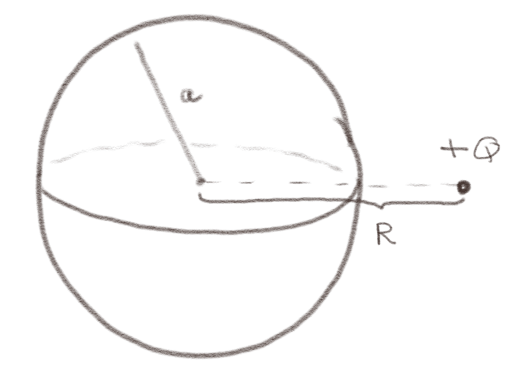
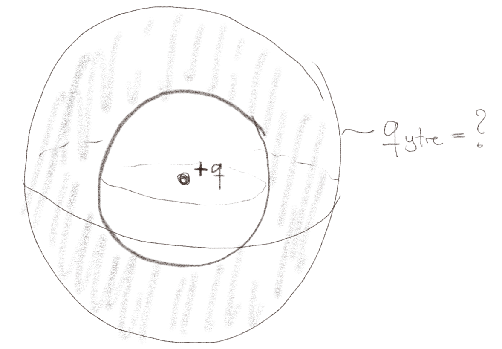
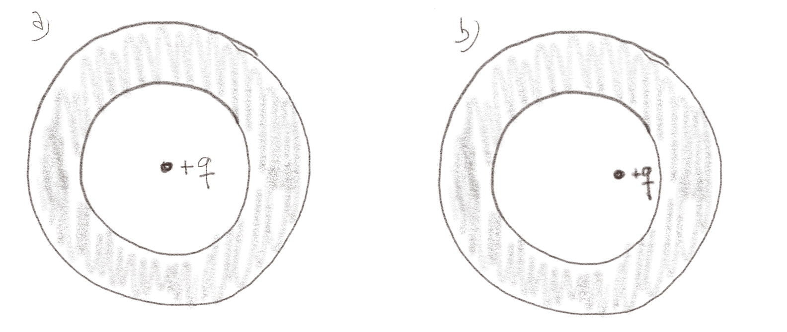

(Lærebok 6.1)
a) En massiv kuleformet ideell leder har en netto ladning \( Q > 0 \). Det elektriske potensialet er
Konstant i hele lederen.
Det elektriske feltet inne i en ideell leder i likevekt er null. Forskjellen i elektrisk potensial \( V \) mellom to punkter \( A \) og \( B \) i lederen er derfor $$ \begin{equation} V_A - V_B = \int_A^B \vec{E} \cdot \d \vec{l} = 0 \tag{1} \end{equation} $$ Det elektriske potensialet er derfor konstant i hele kulen. Det kan være null, men det er avhengig av hvor nullpunktet for potensialet er valgt å være.
Figuren visen en kuleformet kobberkule (en ideell leder) med radius \( r \). En ladning \( +Q \) er plassert i en avstand \( r>a \) fra sentrum i kulen.

a) Hvis kulen er nøytral, dvs at netto ladning på kulen er null, hva er det elektriske feltet i midten av kulen?
0
Det elektriske feltet inne i en ideell leder er null. Ladninger vil organisere seg på overflaten helt til feltet er lik null inne i lederen.
b) Hvis kulen har en netto ladning \( +q \), hva er det elektriske feltet i midten av kulen nå?
0
Det elektriske feltet inne i en ideel leder er null, selv om lederen har netto ladning. Ladninger vil organisere seg på overflaten helt til feltet innen i lederen er null.
En nøytral kobberkule (en ideell leder) har et kuleformet hull i sentrum. En ladning \( +q \) plasseres i sentrum av hullet (og kuleskallet).

a) Hva er den totale ladningen på utsiden av kobberkulen når systemet er i likevekt?
Hva er den totale ladningen på innsiden av kobberkulen?
Bruk Gauss' lov på en kuleflate.
\( +q \)
Vi vet at det elektriske feltet inne i den ideelle lederen må være null. Det må skje ved at ladninger fordeler seg på overflaten av lederen. Vi ser at systemet har kulesymmetri, slik at vi forventer at ladningsfordelingen på overflaten også er kulesymmetrisk. Vi bruker Gauss' lov på en kuleflate med samme sentrum som kulen og med radius \( r \), slik at Gaussflaten er inne i lederen: $$ \begin{equation} \oint_S \vec{E} \cdot \d \vec{S} = E_r \oint_S \d S = E_r 4 \pi r^2 = Q_{\text{in}} \; . \tag{2} \end{equation} $$ For at feltet skal bli null, må \( Q_{\text{in}} \) være null. Det kan kun skje hvis ladningen på den indre overflaten er \( -q \). Siden hele kulen er nøytral, må da ladningen på den ytre overflaten være \( +q \).
(Lærebok 6.2.1)
Figuren viser et ledende, nøytralt kuleskall med indre radius \( a \). Inne i kuleskallet er det en ladning \( +q \).

a) Hvis ladningen er plassert i sentrum av kuleskallet, som i figuren til venstre, hva er da det elektriske feltet innenfor kuleskallet, dvs, for \( r < a \)?
\( \vec{E} = q/(4 \pi \epsilon_0 r^2) \rhat \)
Vi kan anta kulesymmetri overalt. Da kan vi anvede Gauss' lov på en kuleflate med sentrum i ladningen. Fra denne vil vi få Coulombs lov for det elektriske feltet fra ladningen $$ \begin{equation} \vec{E} = \frac{q}{4 \pi \epsilon_0 r^2} \rhat \; . \tag{3} \end{equation} $$
b) Hvis ladning er plassert til siden for sentrum av kuleskallet, som i figuren til høyre, hva er da det elektriske feltet innennfor kuleskallet, dvs for \( r < a \)?
Et mer komplisert felt
Her kan vi ikke lenger anta kulesymmetri rundt ladningen. Det vil oppstå en ladningsfordeling på overflatene av lederen slik at feltet inne i lederen blir null, men denne ladningsfordelingen blir ikke kulesymmetrisk. Vi må derfor regne på dette i detalj. Det kan vi gjøre med Laplace likning.
Vi har en ideell leder som er \( L \times L \) stor og kutter ut et kvadratisk hull som er \( 0.8 L \times 0.8 \) i midten av lederen.
a) Hva er det elektriske feltet inne i hullet hvis det ikke er noen ladninger der?
0
Vi vet at overflaten til hullet er overflaten til en ideell leder og derfor er en ekvipotensialkurve. Inne i hullet er det ingen ladninger. Potensialet er derfor gitt av Laplace likning \( \nabla^V = 0 \), som vil gi at \( V \) er konstant inne i hullet. (Her kan du f.eks. argumentere ved å bruke at ekstremalverdiene til \( V \) må ligge på randen/grensen av hullet. Det betyr at inne i hullet kan ikke potensialet være mindre enn eller større enn potensialet på rangen/grensen av hullet. Potensialet er derfor konstant inne i hullet, og det elektriske feltet er null).
b) Vi plasserer så en ladning \( +q \) i midten av hullet. Blir feltet inne i hullet lik feltet fra en ladning i vakuum? Forklar hvordan du tenker?
Nei
Vi kan her ikke anta at systemet har kulesymmetri (polarsymmetri eller sylindersymmetri egentlig, siden vi har et to-dimensjonalt system). Vi vil derfor ikke kunne bruke Gauss lov med en kuleflate rundt ladningen. Vi vet f.eks. at feltet vil stå normalt inn på lederen, og det betyr at det ikke kan være kule/sylinder-symmetrisk. Vi vil derfor tro at nær ladningen i midten vil feltet være omtrent som feltet fra en enkel ladning, mens nærmere lederen vil feltet går normalt inn på lederen.
c) Finn det elektriske potensialet og det elektriske feltet inne i hullet ved å modifisere programmet som ble brukt i eksempelet.
# Definere randverdier
L = 100
b = np.zeros((L,L))
# Lag kvadratisk hull
L0 = int(L*0.2)
L1 = int(L*0.8)
for ix in range(L0,L1):
for iy in range(L0,L1):
b[ix,iy] = np.float('nan')
# Plasser enkelt ladning
b[int(L*0.5),int(L*0.5)] = 1.0
# Regn ut elektrisk potensial og felt
V = solvepoissonvonneumann(b,10000)
Ey,Ex = np.gradient(-V)
# Visualisering av potensial og felt
x = np.linspace(0,L-1,L)
y = np.linspace(0,L-1,L)
plt.figure(figsize=(7,7))
plt.streamplot(x,y,Ex,Ey)
(Lærebok 6.3.3)